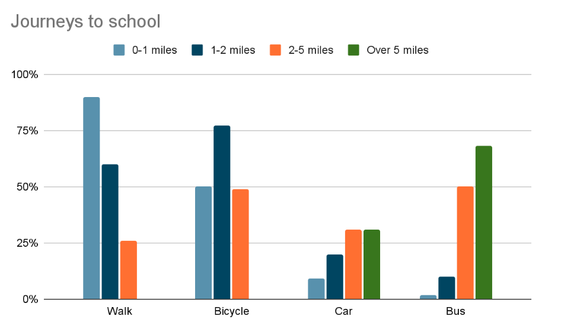

You should spend about 20 minutes on this task.
The chart below gives information about the journey to school by children aged 11 to 16 in the UK in a year. Summarise the information by selecting and reporting the main features, and make comparisons where relevant.
Write at least 150 words.
You should spend about 40 minutes on this task.
Many people around the world use social media to keep in touch with other people and get the news. Do you think the advantages of this development outweigh the disadvantages?
You should write at least 250 words